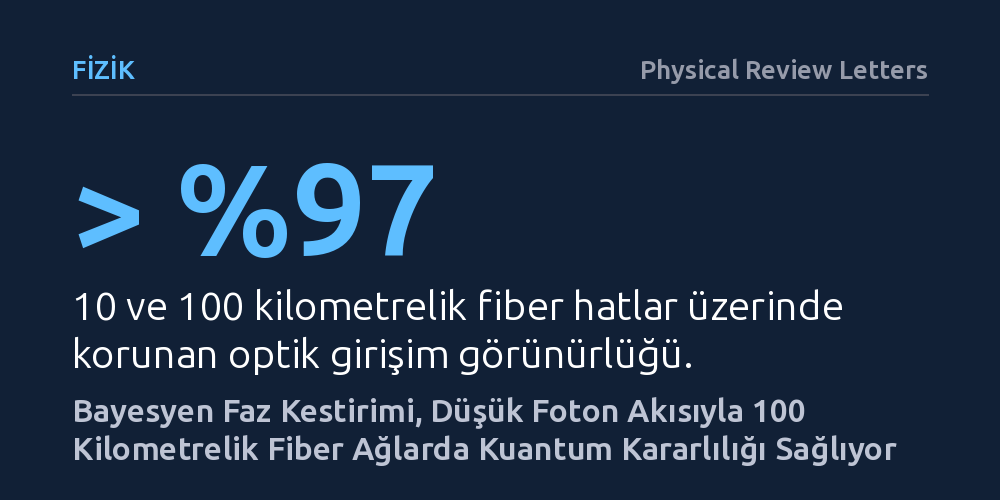

FIZIK · Physical Review Letters · 2026-10-19
Araştırmacılar, kuantum ağlarındaki hassas kuantum durumlarını bozmadan lazer ve fiber faz gürültüsünü gerçek zamanlı dengeleyen Bayesyen bir yöntem geliştirdi. Bu sistem, çok düşük foton akısıyla 100 kilometreye kadar fiber hatlarda yüksek girişim görünürlüğü ve kararlı iyon dolaşıklığı sağladı.
Kuantum internetinin uzun mesafelerde kurulabilmesi için gereken hassas optik faz denetiminin, kuantum belleğindeki bilgiyi bozmadan ve kuramsal gürültü sınırında başarılabileceğini kanıtlıyor.

Kuantum bilgisayarlarını ve güvenli iletişim kanallarını birbirine bağlamak modern fiziğin en önemli hedeflerindendir. Birbirinden uzaktaki iki kuantum düğümünü—örneğin farklı konumlardaki hapsedilmiş iyonları—ortak bir ağda buluşturmak için tekil fotonların girişiminden yararlanılır. Ancak bu iki ayrı noktadan çıkan ışık sinyallerinin bir merkezde kusursuz biçimde üst üste binip girişim oluşturabilmesi, aradaki faz ilişkisinin milimetrenin milyonda biri hassasiyetinde sabit kalmasına bağlıdır.
İşte temel zorluk tam bu noktada ortaya çıkar: Kilometrelerce uzunluktaki fiber optik kablolar ve lazer kaynakları, ortam sıcaklığındaki en ufak değişimden ya da mekanik titreşimlerden etkilenerek ışık dalgasının fazını sürekli kaydırır. Klasik haberleşmede bu kaymayı hattan güçlü lazer ışıkları göndererek sürekli ölçmek mümkündür. Oysa kuantum ağlarında, düğümlerdeki kuantum durumları öylesine kırılgandır ki fazı sabitlemek amacıyla gönderilecek yoğun bir ışık demeti kuantum belleği bozar. Dolayısıyla araştırmacılar, kuantum durumlarını korumak adına ışık akısını ve ölçüm süresini olabildiğince düşük tutmak zorundadır.
Araştırmacılar bu kısıtı aşmak amacıyla, son derece seyrek foton akısıyla çalışan entegre bir faz sabitleme sistemi geliştirdi. Geleneksel yaklaşımlarda fazı kestirmek için en yüksek olabilirlik gibi standart istatistiksel yöntemler kullanılır. Fakat foton sayısı aşırı azaldığında bu geleneksel teknikler yetersiz kalır ve tahmin hataları hızla büyür.
Ekip, dedektörlere seyrek olarak ulaşan tek foton sinyallerinden en yüksek verimle bilgi çıkaran bir Bayesyen faz kestiricisi kurdu. Bu matematiksel algoritma, eldeki olasılık bilgisini her yeni foton algısıyla güncelleyerek fazdaki anlık kaymayı en az fotonla tahmin ediyor. Sistemin hem lazer kaynaklarından hem de iletim fiberlerinden gelen toplam faz gürültüsünü gerçek zamanlı olarak hesaplayıp düzeltmesi sağlandı. Böylece fizik yasalarının izin verdiği en düşük kuantum gürültü seviyesi olan atış gürültüsü sınırına ulaşıldı.
Geliştirilen sistem, laboratuvarda ayrı noktalarda bulunan hapsedilmiş iyon düğümleri ve aralarındaki fiber hatlar üzerinde sınandı. Sistem, kuantum bellekleri rahatsız etmemek adına yalnızca yüzde 6,5 veya daha düşük bir görev döngüsüyle ve saniyede yaklaşık 1 megahertzlik foton hızıyla çalıştırıldı. Buna rağmen sistem, 10 kilometrelik ve 100 kilometrelik fiber optik bağlantılar üzerinde optik girişim görünürlüğünü yüzde 97'nin üzerinde tutmayı başardı.
Bu yüksek faz kararlılığı, iki iyon düğümü arasında tek foton girişimiyle başarılı bir şekilde dolaşıklık kurulmasını sağladı. Üretilen iyon-iyon dolaşıklığı yüzde 85'i aşan bir eşlik karşıtlığı sergiledi. Dahası, 10 kilometrelik hatta elde edilen bellek-bellek dolaşıklığının hayatta kalma süresi, bu dolaşıklığı oluşturmak için gereken ortalama süreyi aştı. Bu durum, kuantum yineleyicilerin çalışabilmesi için şart olan temel gereksinimin sağlandığını gösteriyor. Sistem ayrıca 10 kilometrede sonlu boyut analizli cihazdan bağımsız kuantum anahtar dağıtımını, 100 kilometrede ise pozitif anahtar üretim hızını mümkün kıldı.
Bu bulgular, kuantum iletişim ağlarının yalnızca kısa laboratuvar masalarında değil, uzun mesafeli fiber altyapılarında da ölçeklenebileceğine dair sağlam bir zemin sunuyor. Uzun mesafelerde tek foton seviyesinde faz kontrolü sağlamak, kuantum ağ mimarisinin en çetin engellerinden biriydi. Bu engelin son derece düşük ışık yoğunluğuyla aşılabilmesi, kuantum belleklerin ömrünü tüketmeden ağ senkronizasyonunun yapılabileceğini ortaya koyuyor.
Yine de pratik bir kuantum internetine giden yolda çözülmesi gereken başka aşamalar bulunuyor. Deney kontrollü laboratuvar koşullarındaki fiber makaralarında gerçekleştirilmiştir; yer altına döşeli, sıcaklık dalgalanmalarının ve titreşimlerin çok daha sert olduğu saha fiberlerinde yöntemin dayanıklılığının sınanması gerekecektir. Buna rağmen çalışma, hassas kuantum verilerini bozmadan optik fazı dizginlemenin mümkün olduğunu net bir biçimde kanıtlıyor.